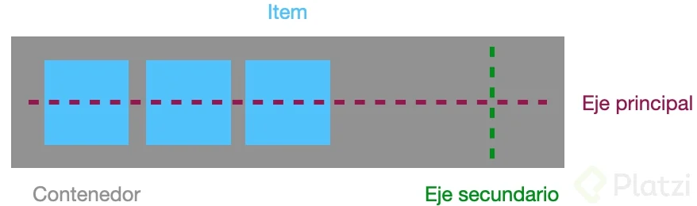

¿Qué es Flex?
Flex es uno de los nuevos valores HTML5 para propiedad CSS display, que nos permite maquinar nuestras páginas web de una manera mucho más fácil de lo que se hacía con la forma tradicional, en la que utilizábamos propiedades como float o position, entre otras.
¿Por qué Flex?
Se llama Flex porque tenemos un contenedor, llamado contenedor Flex, que es el elemento que contiene la propiedad display: flex.
Desde ese contenedor vamos a poder especificar la alineación de los elementos que hay dentro, el tamaño de los elementos que contienen y distribuir el espacio restante que hay entre los elementos del contenedor Flex, y todo esto en una sola dirección, ya sea una horizontal o vertical. Es decir, podemos distribuir los elementos que contiene la etiqueta sin poner nada dentro de estos elementos.
¿Qué podemos hacer con Flexbox?
- Diseños flexibles con menos código.
- Alinear los elementos de manera vertical y horizontal.
- Reordenar contenido sin tocar el HTML.
Conceptos Básicos
Los elementos básicos de Flexbox son:
- Contenedor. Existe un elemento padre que es el contenedor, ya que tendrá en su interior cada uno de los ítems flexibles y adaptables.
- Eje principal. Los contenedores flexibles tendrán una orientación principal específica. Por defecto es horizontal con el valor
row - Eje secundario. De la misma forma que el eje principal, solo que esta orientación será perpendicular a la principal. Si la principal es horizontal, la secundaría será vertical con el valor
column, y viceversa.
- Eje principal. Los contenedores flexibles tendrán una orientación principal específica. Por defecto es horizontal con el valor
- Ítem. Cada uno de los hijos flexibles que tendrá el contenedor en su interior.
Viendo esto en código sería de la siguiente forma.
<!-- Contenedor -->
<section>
<!-- ítems -->
<article>Contenido 1</article>
<article>Contenido 2</article>
</section>
Para volver a dicho contenedor un contenedor flexible habrá que modificar su valor display por defecto.
section {
display: flex;
}
Dirección de los Ejes
Existen dos propiedades principales para manipular la dirección y comportamiento de los ítems a lo largo del eje principal del contenedor que son flex-direction y flex-wrap.
Mediante la primera propiedad podemos modificar la dirección del eje principal del contenedor para que se oriente en horizontal (por defecto) o en vertical.
flex-direction: row;
flex-direction: row-reverse;
flex-direction: column;
flex-direction: column-reverse;
section {
display: flex;
/* Puede tomar los valores de row, row-reverse, column y column-reverse */
flex-direction: column;
}
Mientras que con la segunda podemos especificar el comportamiento del contenedor respecto a evitar que se desborde o permitir que lo haga.
flex-wrap: nowrap;
flex-wrap: nowrap;
section {
display: flex;
flex-direction: row;
flex-wrap: wrap;
}
Atajo
Estas propiedades tienen su propiedad atajo que es flex-flow, con la que podemos resumir los valores.
section {
display: flex;
flex-flow: row wrap;
}
Propiedades de Alineación
Flexbox tiene propiedades para disponer de los ítems dependiendo de como sea nuestro diseño. A continuación describiremos cada una de estas propiedades.
Alineación al eje principal
La propiedad que nos permite alinear los ítems al eje principal es justify-content y sus valores, así como la visualización de cómo se aplican estos valores a los ítems son los siguientes.
align-items: flex-start;
align-items: flex-end;
align-items: center;
align-items: stretch;
align-items: baseline;
Ejemplo de código para centrar todos los ítems en el eje horizontal.
section {
display: flex;
flex-direction: row;
flex-wrap: wrap;
justify-content: center;
}
Alineación al eje secundario
De igual forma que para el eje principal tenemos una propiedad que nos permite alinear los ítems en el eje secundario y es align.items y sus valores, así como la visualización de cómo se aplican estos valores a los ítems son los siguientes.
align-items: flex-start;
align-items: flex-end;
align-items: center;
align-items: stretch;
align-items: baseline;
Ejemplo de código para poner todos los ítems al inicio del eje secundario.
section {
display: flex;
flex-direction: row;
flex-wrap: wrap;
justify-content: center;
align-items: flex-start;
}
La propiedad align-items alinea a todos los hijos de igual forma y se aplica en el contenedor, también tenemos una propiedad para alinear en el eje secundario a cada hijo de forma individual. Esta propiedad es align-self y se debe aplicar en cada hijo específico.
article {
background-color: #555;
align-self: center;
}
En otras palabras nos permite sobreescribir de forma individual el align del padre
Propiedades de los Hijos
A excepci´n de la propiedad align-self, todas las propiedades anteriores se aplican sobre el elemento contenedor. Las siguientes propiedades, sin embargo, se aplican sobre los ítems hijos.
Factor de crecimiento
El factor de crecimiento de los ítems o flex-grow nos permite indicar el tamaño que crecerá un ítem en relación con sus demás hermanos, esto siempre y cuando haya espacio disponible en el contenedor para crecer. Su valor por defecto es 0.
article {
background-color: #555;
align-self: center;
flex-grow: 1;
}
Factor de decrecimiento
El factor de decrecimiento o flex-shrink como su nombre lo indica es lo opuesto a la propiedad anterior. De esta forma, los ítems que tengan un valor numérico más grande, serán más pequeños, mientras que los que tengan un valor numérico más pequeño serán más grandes. Su valor por defecto es 1.
article {
background-color: #555;
align-self: center;
flex-grow: 1;
flex-shrink: 2;
}
Tamaño por defecto
La propiedad flex-basis, define el tamaño base que tendrán los ítems antes de aplicarle la distribución de espacio. Su valor por defecto es auto
article {
background-color: #555;
align-self: center;
flex-grow: 1;
flex-shrink: 2;
flex-basis: 120px;
}
Atajo
Estas tres propiedades tiene su propio atajo llamado flex. Funciona de la siguiente forma:
article {
background-color: #555;
align-self: center;
flex: 1 2 120px;
}
Huecos
Flexbox también tiene propiedades para manejar el espaciado existente entre sus ítems dentro del elemento contenedor, estas propiedades son row-gap y column-gap, son alternativas al uso de padding o margin en los elementos hijos.
selector {
row-gap: 5px;
column-gap: 10px;
}
❗Hay que tener en cuenta que solo una de las dos propiedades tendrá efecto, dependiendo de si la propiedad flex-direction está establecida en column o en row. Eso sí, es posible usar ambas si tenemos la propiedad flex-wrap definida a wrap y, por lo tanto, disponemos de multicolumnas flexbox.
Atajo
Estas dos propiedades igual que otras dentro de flexbox tienen su propio atajo llamado gap.
Funciona de la siguiente forma.
article {
background-color: #555;
/* gap: row column */
gap: 5px 10px;
/* 1 parámetro: usa el mismo para ambos */
gap: 5px;
}
❗Tener en cuenta que estas propiedades de huecos en flexbox, aún no tienen un soporte demasiado extendido entre navegadores. Revisar en Can I Use.
Orden de los ítems
Las propiedades más interesantes, es order, que modificar y establece el orden de los ítems según una secuencia numérica. Por defecto, todos los ítems flex tienen un order: 0 implícito, aunque no se especifique. Si indicamos uno, se irán recolocando los ítems según su número, colocando antes los ítems con número más pequeño (incluso valores negativos) y después los ítems con números más altos.
article {
background-color: #555;
order: 2;
}
Este artículo también lo puede encontrar en Medium. Donde también escribo más artículos o al menos lo intento 👌🏻